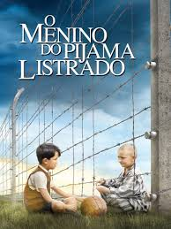
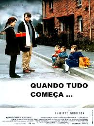
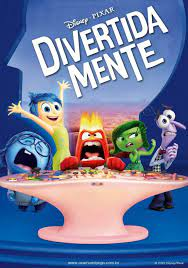

| Título do Filme | Link | Opinião | Capa |
|---|---|---|---|
| O Menino do Pijama Listrado | Assistir | Durante a Segunda Guerra Mundial, Bruno, um garoto de oito anos, e sua família saem de Berlim para residir próximo a um campo de concentração, onde seu pai acaba de se tornar comandante. Infeliz e solitário, ele vagueia fora de sua casa e certo dia encontra Shmuel, um menino judeu de sua idade. Embora a cerca de arame farpado do campo os separem, os meninos começam uma amizade proibida. |  |
| Quando tudo começa | Assistir | Daniel Lefebvre é um professor em uma pequena cidade que sofre com o fechamento das minas de carvão e enfrenta uma alta taxa de desemprego. Ele e os outros professores são aconselhados a não se envolverem com os problemas da comunidade, mas é impossível para o rapaz ignorar a miséria, a indiferença do governo e os sérios problemas domésticos que suas crianças enfrentam. Então, ele começa uma campanha contra o governo local, reivindicando condições dignas de vida para a população. |  |
| Divertidamente | Assistir | Com um salto temporal, Riley se encontra mais velha, passando pela tão temida adolescência. Junto com o amadurecimento, a sala de controle também está passando por uma adaptação para dar lugar a algo totalmente inesperado: novas emoções. |  |
| Uma lição de vida | Assistir | Uma emocionante narrativa de superação baseada em uma história real. Um africano de 84 anos luta para receber educação básica e se alfabetizar. Ele é admitido em uma escola de pré-escolares e, encontra crianças de seis anos e um professor dedicado, ultrapassa os limites de um passado colonial e violento. | |